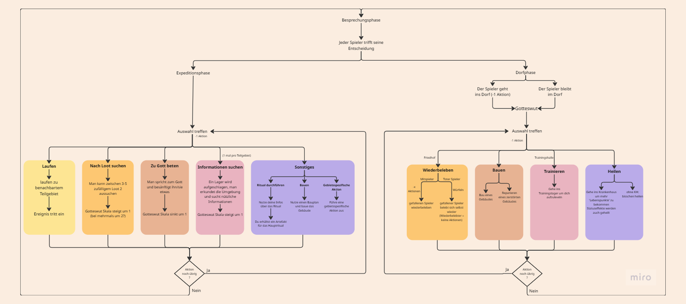

Erkundung der Phasen
Ausarbeitung der Expeditionsmechanik
Für die Gestaltung der Erkundungsphase haben wir uns in der Gruppe mit verschiedenen möglichen Aktionen beschäftigt, die Spieler:innen während einer Expedition ausführen können. Ziel war es, ein System zu entwickeln, das einerseits klare Strukturen bietet und andererseits Raum für strategische Entscheidungen lässt.
Am Ende des Prozesses haben wir uns auf ein Modell geeinigt, bei dem Expeditionen in verschiedene Gebiete mit zugehörigen Teilgebieten führen und dort diese Aktionen ausgefürt werden können
Zur Auswahl stehen dabei folgende Grundaktionen
- Nach Loot suchen
- Zu Gott beten
- Laufen
- Informationen suchen
- Sonstiges
Diese Aktionsmöglichkeiten bilden das Grundgerüst der Expeditionen. Im weiteren Verlauf der Entwicklung verschiedener anderer Spielaspekte wurden sie im Team nochmals überdacht und verfeinert, um die Expeditionsphase zu einem abwechslungsreichen und spielerisch attraktiven Erlebnis zu machen.
Die Entwicklung der Dorffase verlief grundsätzlich ähnlich zur der der Expedition. Zwar gab es inhaltliche Unterschiede – insbesondere, dass die Dorffase analog und die Erkundung digital umgesetzt werden soll – doch auch hier stand zunächst die Ausarbeitung grundlegender Spielzüge im Vordergrund. Ziel war es, Aktionen zu definieren, die sich deutlich von denen der Expedition unterscheiden und der Dorffase eine eigene Dynamik verleihen. Im weiteren Verlauf der Entwicklung wurden diese Grundzüge verfeinert, ergänzt und mit spezifischen Elementen angereichert, um der Dorffase einen eigenen Charakter und spielerischen Reiz zu geben.
Flowchart der möglichkeiten der Spieler:innen
